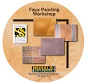
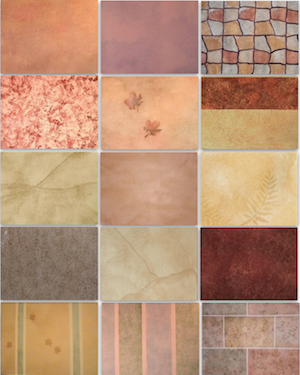
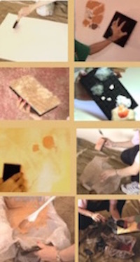
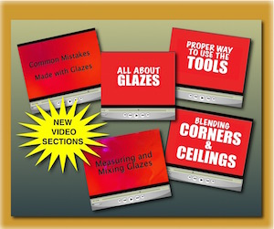

This faux painting workshop is included with Basic Faux Painting Kit. It has step by step instructions for 10 faux finishes.

Now you can learn to faux paint popular techniques like Old World,Color Washing, Faux Painting Ragging,Sponge Painting, Stripes, Clouds, Faux Stone,Faux Brick and Stenciling in multiple colors.

To view up close pictures of the finishes you will learn, click on the following link: Faux Finishes on DVD
Each technique is explained in easy to follow steps with finished examples of walls or boards. Since you are learning by video, you can stop at any time and review any segment over and over again until you have them remembered well. Much of the time spent in most faux painting schools includes practicing over and over to achieve the look you are desiring. Now you can do that at home on your own schedule. Practice does make a difference. All the colors used for the faux finishes on this DVD are suggestions and can be easily changed to suit your particular designing needs. With time you will eventually begin to confidently experiment with your own creative faux finishes using these innovative faux painting tools that are not yet available in stores.
This DVD workshop is divided into 12 segments. It is easy to navigate from the different selections when choosing this option from the beginning if you choose not to view the whole video.

We recommend that if you are relatively new to the art of faux finishing, that you start with the Basic Terms and Descriptions section. Sometimes there are terms used in faux painting that are not commonly used. Learn what the words FAUX, BASE COAT, TOP COAT, OPEN TIME, etc. means.
This segment demonstrates how to use each of the faux painting tools included in the Triple S Faux Painting Kit. There are suggestions for other faux painting tools that can be useful and helpful to facilitate the steps needed to achieve certain faux finishes. It also explains the necessary preparations of practice boards and walls that are needed before you start painting.
Learning from other faux painting professionals saves time and mistakes can be kept at a minimum when we heed to their advice based on their experience. Tips include how to choose colors for your glazes, how to make your faux painting tools last longer, how to have easier clean up of trays and how to avoid common mistakes made especially by beginners. The tips alone are worth the price of the whole faux painting kit!

We have added even more great segments to our workshop DVD. Methods taught by other companies don't go into detail about how to mix your own glazes. With this DVD, you will learn how to measure the correct amount of glaze needed in relation to paint. Faux painting on a practice board is not the same as on a wall, therefore, you will learn how to correctly blend in your corners and ceilings. Some common mistakes made using glazes will also be discussed and illustrated for you.

(This kit includes Basic, Faux Marble, Faux Wood Kit and tools for texturing)
*FREE Priority Shipping and Color Idea E-book